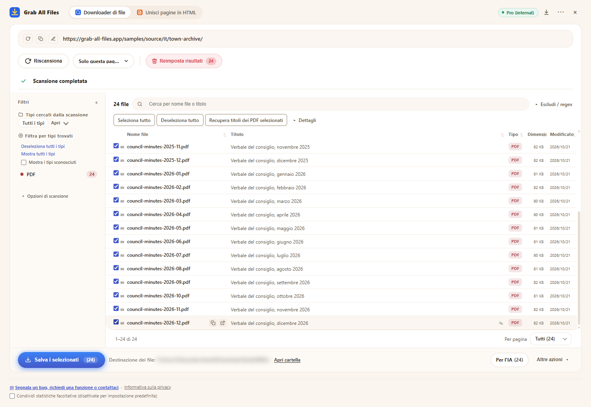

Risultati reali di Grab All Files
24 PDF scaricati in un’unica operazione (Pro)
L’archivio dei verbali del consiglio di una città immaginaria (un verbale al mese da gennaio 2025 a dicembre 2026: 24 PDF) è stato analizzato, tutti i PDF sono stati selezionati e salvati in una sola operazione. La versione Gratis salva fino a 10 file per download, quindi servirebbero tre operazioni; Pro non ha limiti per download. I nomi dei file sono stati assegnati dall’estensione in base al titolo di ciascun PDF.
File di output
- Verbale del consiglio, gennaio 2025.pdf
- Verbale del consiglio, febbraio 2025.pdf
- Verbale del consiglio, marzo 2025.pdf
- Verbale del consiglio, aprile 2025.pdf
- Verbale del consiglio, maggio 2025.pdf
- Verbale del consiglio, giugno 2025.pdf
- Verbale del consiglio, luglio 2025.pdf
- Verbale del consiglio, agosto 2025.pdf
- Verbale del consiglio, settembre 2025.pdf
- Verbale del consiglio, ottobre 2025.pdf
- Verbale del consiglio, novembre 2025.pdf
- Verbale del consiglio, dicembre 2025.pdf
- Verbale del consiglio, gennaio 2026.pdf
- Verbale del consiglio, febbraio 2026.pdf
- Verbale del consiglio, marzo 2026.pdf
- Verbale del consiglio, aprile 2026.pdf
- Verbale del consiglio, maggio 2026.pdf
- Verbale del consiglio, giugno 2026.pdf
- Verbale del consiglio, luglio 2026.pdf
- Verbale del consiglio, agosto 2026.pdf
- Verbale del consiglio, settembre 2026.pdf
- Verbale del consiglio, ottobre 2026.pdf
- Verbale del consiglio, novembre 2026.pdf
- Verbale del consiglio, dicembre 2026.pdf
L’estensione con 24 PDF selezionati, subito prima del salvataggio (la posizione di salvataggio è sfocata)

Come è stato ottenuto
- Pagina di origine
- /samples/source/it/town-archive/
- Estensione
- Grab All Files 5.8.20
- Browser
- Chrome 155.0.8059.85 (Windows 11)
- Piano
- Pro
- Creato il
- 2026-10-21
- Impostazioni
- Profondità dei collegamenti: Solo questa pagina
- Tipo di file: solo PDF
- File selezionati: 24
- Salvato in: la cartella dei download del browser (cartella GrabAllFiles)